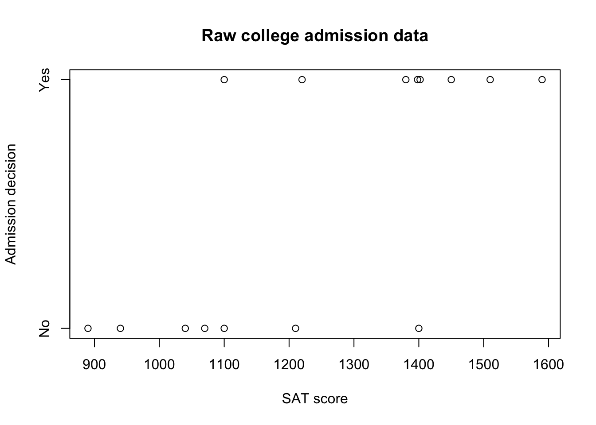
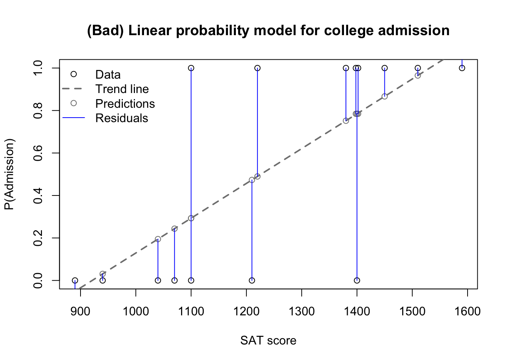
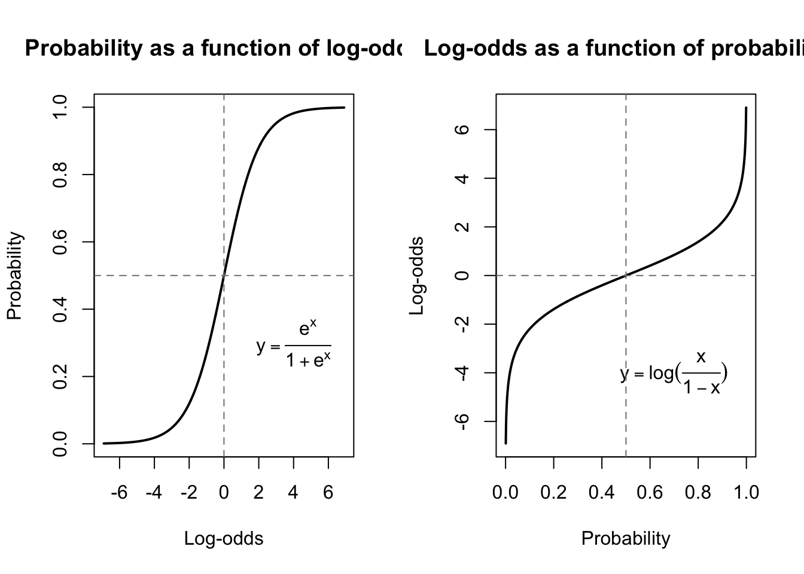
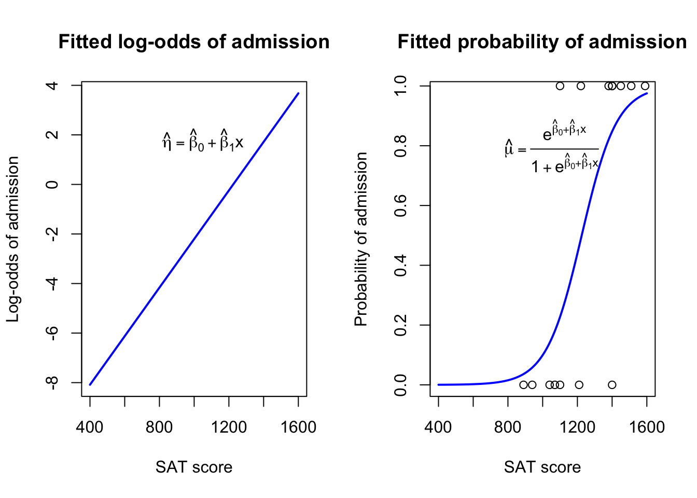

Logistic regression is perhaps the most widely-used statistical model for explaining binary (0/1) response variables. It can be used for regression (that is, prediction, parameter estimation, probabilistic statements about future values, etc.) as well as classification (clustering a set of observations into self-similar groups, predicting class membership, etc.)
Setting up the data and the problem
In the United States, the SAT is one of two college-placement tests typically administered to high school students. Scores on the SAT range from 400 to 1600, in increments of 10. Colleges often reject applications with SAT scores below a certain threshold and assign positive or negative weight in the admissions decision to different scores above that threshold.
Imagine a dataset which describes a high school class’s SAT scores and their college admissions decisions. Two students with the same SAT score might receive different admissions decisions, depending on whether they applied to a very competitive school, and depending on the other factors in their admissions application (such as their grades or their extracurriculars). Still, some trends might emerge:
SAT score
Admission
SAT score
Admission
890
No
1380
Yes
940
No
1400
Yes
1040
No
1400
Yes
1070
No
1400
No
1100
Yes
1450
Yes
1100
No
1510
Yes
1210
No
1590
Yes
1220
Yes
We can plot the raw data, jittering identical values as necessary:
Code
SAT <-c(890,940,1040,1070,1100,1100,1210,1220,1380,1400,1400,1400,1450,1510,1590)SAT.plot <-c(890,940,1040,1070,1100,1100,1210,1220,1380,1398,1402,1400,1450,1510,1590)admit <-c(0,0,0,0,1,0,0,1,1,1,1,0,1,1,1)plot(SAT.plot,admit,yaxt='n',xlab='SAT score',ylab='Admission decision',main='Raw college admission data')axis(side=2,at=c(0,1),labels=c('No','Yes'))

Raw values for the college admission example
We can see that changes in SAT score lead to changes in the admissions decisions. From the toolset we developed in previous sections, we may be tempted to fit a linear regression. Although we can’t directly use OLS regression to model responses of “Yes” and “No”, we could use OLS regression to model the probability of “Yes”, which might be enough for our analysis. When linear regression is used to predict a probability, the model is sometimes referred to as a linear probability model, and they do have their place… just not in this section:1
Code
admit.lm <-lm(admit~SAT)plot(SAT.plot,admit,xlab='SAT score',ylab='P(Admission)',main='(Bad) Linear probability model for college admission')abline(reg=admit.lm,lty=2,lwd=2,col='grey50')points(SAT.plot,admit.lm$fitted.values,col='grey50')segments(x0=SAT.plot,y0=admit.lm$fitted.values,y1=admit,col='#0000ff')legend(x='topleft',pch=c(1,NA,1,NA),lty=c(NA,2,NA,1),lwd=c(NA,2,NA,1),col=c('black','grey50','grey50','#0000ff'),bty='n',legend=c('Data','Trend line','Predictions','Residuals'))

Linear probability model for college admission
The OLS regression model for this data is badly misspecified in at least three different ways:
For SAT scores that are low enough or high enough, the model predicts impossible “probabilities” of college admission below 0 or above 1
Instead, we want a model which is bounded below and above by 0 and 1, never predicting impossible probabilities
A fixed change in SAT scores creates the same change in admission probability no matter the starting point
Our knowledge of the world suggests diminishing returns: a 50 point increase in SAT score will not greatly change the admission probability of a student with a very low 800 score or a very high 1550 score
OLS regression assumes a normal distribution of errors at every point \(x_i\)
Since the data are always either 0 or 1, there are only two errors for each \(\hat{y}_i\): \(1 - \hat{y}_i\) and \(-\hat{y}_i\)
More importantly, we’d like to find a model that doesn’t treat observations of 0 and 1 as “errors”, but as valid and expected values
Most of our problems here are caused by the fact that we are trying to linearly predict a binary variable. Even if we try to model \(P(\mathrm{Admit} = \mathrm{Yes})\) instead of directly modeling admissions, we are still using an unbounded linear model to describe bounded data.
Solving the problem by modeling log-odds
So instead of linearly modeling \(P(\mathrm{Admit} = \mathrm{Yes})\), let’s linearly model a transformation of \(P(\mathrm{Admit} = \mathrm{Yes})\) which isn’t bounded. We will transform admission probability once to remove the upper bound, and transform it a second time to remove the lower bound. To discuss this transformation,I must first introduce the concept of odds.
Note
Let \(X\) be a random variable and \(\mathcal{A}\) be an event within the event space of \(X\) with probability \(P(\mathcal{A})\). Then the odds of \(\mathcal{A}\) are:
Odds are similar to probability in that more likely events will have larger odds, and less likely events will have smaller odds.2 But unlike probability, odds are unbounded above: odds can be higher than 1, and in fact can be arbitrarily large. An event with 90% probability has odds of \(\frac{90\%}{10\%} = 9.\) An event with 99% probability has odds of \(\frac{99\%}{1\%} = 99.\) Odds of 1,000,000 are certainly possible. On the other hand, odds are still bounded below by zero, and for very unlikely events odds and probability are almost identical. A 1-in-1000 event has probability \(0.001\) and odds of \(\frac{0.001}{0.999} \approx 0.001001.\)
We are one step away from a completely unbounded function of probability. To remove the bound below, I will introduce the log-odds, which are simply the log of the odds:
Note
Let \(X\) be a random variable and \(\mathcal{A}\) be an event within the event space of \(X\) with probability \(P(\mathcal{A})\). Then the log-odds of \(\mathcal{A}\) are:
This transformation of probability is completely unbounded and also shows the non-linear behavior we were seeking, where a moderate change in log-odds makes very little difference in probability when the prior probability was already very small or very large:
Code
par(mfrow=c(1,2))plot(y=seq(0.001,.999,0.001),x=log(seq(0.001,.999,0.001)/(seq(0.999,.001,-0.001))),main='Probability as a function of log-odds',ylab='Probability',xlab='Log-odds',type='l',lwd=2)text(4,.3,expression(y==frac(e^x,1+e^x)))abline(h=0.5,lty=2,col='grey50')abline(v=0,lty=2,col='grey50')plot(x=seq(0.001,.999,0.001),y=log(seq(0.001,.999,0.001)/(seq(0.999,.001,-0.001))),main='Log-odds as a function of probability',xlab='Probability',ylab='Log-odds',type='l',lwd=2)text(.7,-4,expression(y==log(frac(x,1-x))))abline(v=0.5,lty=2,col='grey50')abline(h=0,lty=2,col='grey50')

The logistic function (l) and the logit function (r)
The left plot above is sometimes called the “logistic function” and its inverse at right is sometimes called the “logit function”.3
We are now ready for the big reveal of our model. Instead of linearly modeling \(p_i\), the probability of college admission for each student, we will linearly model the log-odds of \(p_i\):
Notice that there is no error term \(\varepsilon_i\) in the equation above. The parameter \(p_i\) will be used in a Bernoulli trial which generates a value of 1 with probability \(p_i\) and a value of 0 with probability \(1-p_i\). There are no “errors”, just the natural range of values supported by our distributional assumption. If our model does not fit very well, we will not see any huge “residuals” — but we will see more 1s than we expect from observations with small \(\hat{p}_i\) and more 0s than we expect from large \(\hat{p}_i\).
This model does not permit a least squares solution. On the scale of log-odds, we cannot measure any residuals, since the actual data are infinitely far away from our predictions (technically, the log-odds of 1 and 0 are undefined), and without residuals we cannot compute (let alone minimize) a sum of squared errors. Instead, we would produce estimators \(\hat{\beta}_0\) and \(\hat{\beta}_1\) using maximum likelihood estimation. The likelihood function for this model cannot be solved directly, but with computer assistance (e.g. gradient descent) we can show,
Parameter
Estimate
z-score
p-value
\(\beta_0\) (Intercept)
-12.01
-2.14
0.03
\(\beta_1\) (Slope on SAT)
0.01
2.18
0.03
These betas describe a familiar linear trend, but that trend is only linear within a transformation of the response variable. If we invert the transformation, we can see the non-linear relationship which these betas imply for our response variable:
Code
admit.glm <-glm(admit~SAT,family=binomial)par(mfrow=c(1,2))plot(x=seq(400,1600,5),y=predict(admit.glm,newdata=list(SAT=seq(400,1600,5))),type='l',xlab='SAT score',ylab='Log-odds of admission',main='Fitted log-odds of admission',col='#0000ff',lwd=2)text(1050,1.8,expression(hat(eta)==hat(beta)[0]+hat(beta)[1]*x))plot(x=seq(400,1600,5),y=predict(admit.glm,newdata=list(SAT=seq(400,1600,5)),type='response'),type='l',xlab='SAT score',ylab='Probability of admission',main='Fitted probability of admission',col='#0000ff',lwd=2)text(1050,0.8,expression(hat(mu)==frac(e^{hat(beta)[0]+hat(beta)[1]*x},1+e^{hat(beta)[0]+hat(beta)[1]*x})))points(SAT,admit)

Fitted logistic relationship between SATs and admission
The blue lines in the two graphs above are really the same line, it’s only the y-axis which changes. If we feed the linear trend at left through the logistic function, we create the graph at right. You can see that the graph at right does a fair job of representing the data: in general, most admitted students were predicted to be admitted \((\hat{\mu} \gt 0.5)\), and most rejected students were predicted to be rejected \((\hat{\mu} \lt 0.5)\). We also see a few bad misses, but all other choices for \(\hat{\beta}_0\) and \(\hat{\beta}_1\) create even worse fits.
Interpreting and using a logistic regression
We have a trend line (well, a trend curve), we have a link function \(g(\mu)=\log(\frac{\mu}{1-\mu})\), and we have some coefficients, but where does that leave us? What can we do with this model? As it turns out, we can still use this model in most of the same ways we used linear regression:
Prediction
For any given row of predictors \(\boldsymbol{x}_i\), we have \(\log(\frac{\hat{\mu}_i}{1-\hat{\mu}_i}) = \hat{\eta}_i = \boldsymbol{x}_i \hat{\boldsymbol{\beta}}\) and so then \(\hat{\mu}_i = g^{-1}(\hat{\eta}_i) = e^{\boldsymbol{x}_i \hat{\boldsymbol{\beta}}}⁄(1+e^{\boldsymbol{x}_i \hat{\boldsymbol{\beta}}})\). Our response can only take on values of 0 or 1, so the “mean response” \(\hat{\mu}_i\) can be thought of as “the probability that \(y_i=1\)”. As an example, a student who scores 1450 on their SAT would be assigned a predicted admission probability of roughly \(\frac{e^{-12.01 + 0.01 \cdot 1450}}{1+e^{-12.01 + 0.01 \cdot 1450}} \approx 90.09\%\).
Classification
We may wish to find the classification boundary, the SAT score which helps separate students into “probably admitted” and “probably rejected” categories. When we use only one predictor, it’s relatively easy to solve for this threshold. A fitted probability of 0.5 has odds of \(0.5⁄0.5 = 1\), and log-odds of \(\log 1 = 0.\) With a little math we see that if \(0 = \hat{\beta}_0 + \hat{\beta}_1 x_i\), then \(x_i = -\hat{\beta}_0⁄\hat{\beta}_1\). In this case, that boundary would be an SAT score of \(12.01⁄0.01 \approx 1225\). Since SAT scores follow increments of 10, we would say that any student with a 1230 or better is classified as “admitted”, and any student with an SAT score of 1220 and below is classified as “rejected”.4
Interpretation
In a linear regression, the estimated slope \(\hat{\beta}_1\) had a straightforward meaning: if \(X\) increases by 1, then we predict that \(Y\) increases by \(\hat{\beta}_1\). Logistic regression doesn’t offer us this easy interpretation: after all, capturing a non-linear effect was the goal of our analysis. Instead, we can view a one-unit change in \(X\) as causing a \(\hat{\beta}_1\) proportional increase in the odds of \(Y\):
Note
Let \(\hat{\boldsymbol{\beta}} = \hat{\beta}_0, \hat{\beta}_1, \ldots, \hat{\beta}_k\) be a set of parameter estimates from a logistic regression model and let \(\textrm{odds}(x_i;\hat{\boldsymbol{\beta}})\) be the odds that \(y_i=1\) when \(X=x_i\), i.e.\(\textrm{odds} (x_i;\hat{\boldsymbol{\beta}}) = e^{\boldsymbol{x}_i \hat{\boldsymbol{\beta}}}\).
Let \(\boldsymbol{x}_i^+\) increment \(\boldsymbol{x}_i\) such that any one of the predictors \(X_j: 1 \le j \le k\) increases by 1. Then we have:
Meaning that the new odds are equal to \(e^{\hat{\beta}_j}\) times the old odds.
In the college admission example, we would not normally be interested in a one-unit change in SAT score, since SATs are scored in increments of 10. However, the logistic regression framework allows us to quickly estimate the effect of a ten-unit change as well. Using the same mathematical reasoning as found above, we can show that if any student should score 10 points higher on their SAT, we would predict their odds of college admission to increase by a factor of roughly \(e^{0.01 \cdot 10} - 1 \approx 10.3\%\).5 Remember that a 10.3% increase in odds is not the same as a 10.3% increase in probability… the betas of logistic regression are harder to understand and harder to explain to others than the betas of linear regression, but that is the price of non-linear modeling.
Hypothesis testing and confidence intervals for the parameters.
Just as with linear regressions, maximum likelihood estimation allows us to develop standard errors for the parameter estimators, and test whether the true parameters might really be 0, or alternatively construct confidence intervals for the location of the true parameters.
Before, these tests and intervals used the t distribution, since we were estimating the error variance from the data as a separate parameter. However, for many GLMs the variance is not a separate parameter but a mathematical consequence of the mean. For example, in the Poisson distribution, the variance is the mean, while in this college admission Bernoulli example, the variance is \(\mu(1-\mu)\). In these cases you may see the standard errors associated with a z-value rather than a t-value, since we are no longer estimating the variance using another estimator, but rather directly from the data.
From the table of parameter estimates above, we see that both the intercept and the slope on SAT are found to be significantly different than 0 at a 5% significance level. We may therefore conclude that higher SAT scores really do increase the log-odds (and thus the probability) of college admission, though not always by a consistent amount.
Model selection and model comparison using AIC.
Since logistic regressions are fit with maximum likelihood estimation, we can naturally compute any model’s AIC just as before, and use it to assess whether predictors belong in or out of the model, and also use it to compare one model with another, even a model with entirely different terms or an entirely different functional form for \(Y\).
What we’ve lost from the OLS model toolkit
As you see, we retain most of the functionality of the OLS regression model studied previously. However, some features of linear regression are no longer available to us:
Confidence intervals for a prediction or a mean response. Technically, this option remains open to us, but it has become somewhat trivial. When dealing with a binary response variable, [0, 1] is a 100% confidence interval for \(Y\), at every possible set of predictors. In cases where 0 or 1 are very unlikely, we could go further and say that “1 is a 95% confidence interval”, or “0 is a 95% confidence interval”, but such statements are not very useful or interesting.
Decomposition of variance according to sums of squares. Since we have no sum of squares framework to use, we cannot examine metrics like R2 and adjusted R2, nor can we perform ANOVA tests to compare model fit or evaluate the contributions of different predictors. We will soon learn alternative measures of assessing goodness-of-fit and how to compare two models within the GLM framework.
Linear probability models are more often seen when the fitted probabilities are bounded within a relatively narrow range, and/or when the fitted probabilities are not especially close to 0 or 1.↩︎
Those readers who enjoy back-room card games or the race track may be familiar with “odds against”, sometimes called gamblers’ odds, which are reversed so that a 10:1 long-shot is ten times more likely to lose than to win. Statisticians, however, use the reciprocal definition above, “odds for”.↩︎
In my experience even experienced professionals often mix the names up, so cut yourself some slack.↩︎
For multiple logistic regression, the classification boundary will be more complicated, but can still be mapped with a grid search or by other methods.↩︎
We subtract one so we can frame the change as an increase. If we don’t subtract one, we are left with a multiplicative shift of roughly 1.103. But to say that the new odds are 1.103 times higher than the old odds is the same as saying we’ve seen a 10.3% increase.↩︎